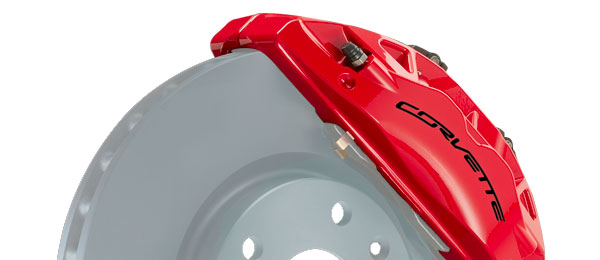
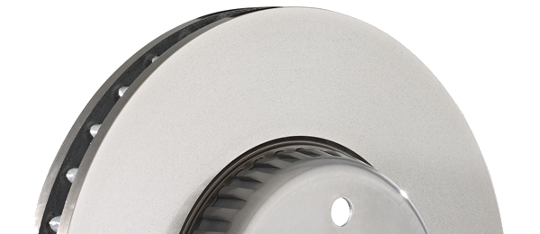
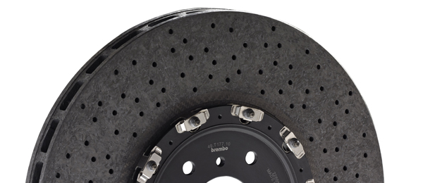

Brembo designs and manufactures each individual part to ensure that it delivers maximum performance as well as superlative
reliability and durability. Brembo brake discs are the industry benchmark for innovation and quality; Brembo brake calipers embody
state of the art design and performance; and Brembo brake modules offer unparalleled integration and efficiency for maximum
reliability, comfort and durability.
Calipers
Brembo produces high-tech brake calipers installed as original equipment in the leading car models in every category.
Discs
Brembo is a world leader in the development and production of brake discs. Brembo supplies makers of cars, commercial vehicles and trucks for both original equipment and original spare parts; it also produces and sells discs for the independent aftermarket. Thanks to integration of production processes and the use of the best design and construction technologies, Brembo factories around the world have by now achieved annual production of close to 50 million discs/year. To support its clients and their respective global expansion strategies, Brembo has production operations in Europe, USA, Mexico, Brazil and China, all implementing standardised, integrated processes, to optimise production and logistics costs.
Carbon-ceramic discs
The Brembo Group has been manufacturing carbon ceramic discs for automotive applications since 2002, when it first supplied these components for the Ferrari Enzo. This high performance material, made from a special mixture of powders, resins and fibres in a complex manufacturing process, has been used since the 1970s in braking systems for aerospace applications and since the 1980s in motorsports. Since 2000, carbon ceramic has also been used in the production of braking systems for sports cars.
